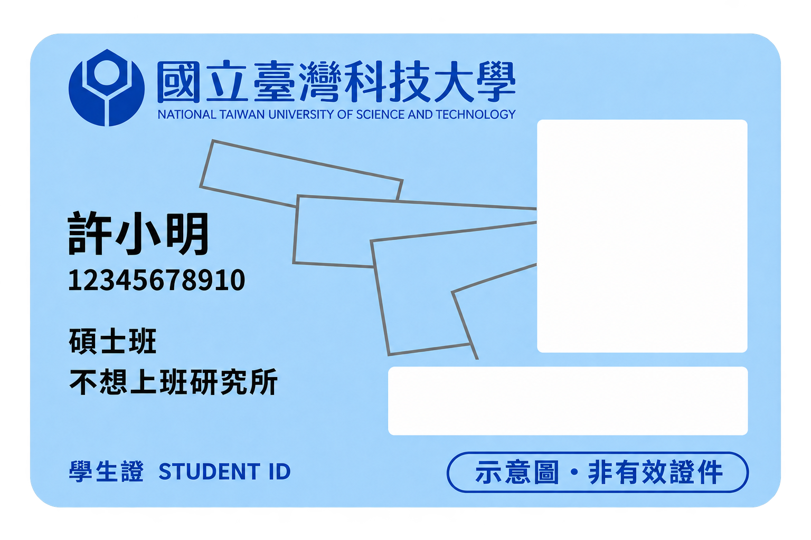

臺科特約商店
查優惠、看地點。從公館到中和，找到今天想去的店。
地區、資格與更多篩選
探索優惠店家
沒有符合的店家，試試其他關鍵字或分類。
結帳前，先確認這三件事。
實際優惠資格與使用方式，以正式店家公告為準。

學生證示意，非有效證件。照片或截圖是否適用，請依各店規則。
找到想去的店
先確認優惠內容、營業時間與使用限制，出發前可向店家再次確認。
點餐或結帳前，出示學生證
主動告知使用臺科學生優惠；是否可與其他優惠併用，依店家規則。
確認特約識別與優惠
正式上線後請以學生會授權的 TS 特約圖樣辨識。此展示版未放入未授權圖樣。